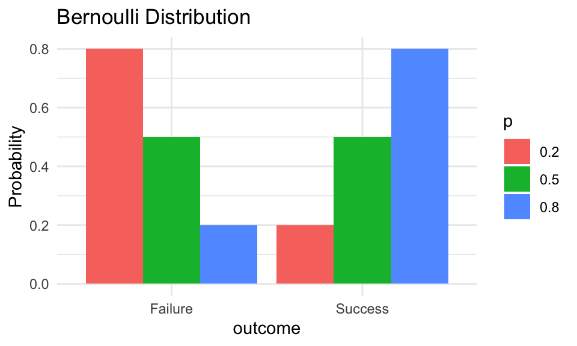
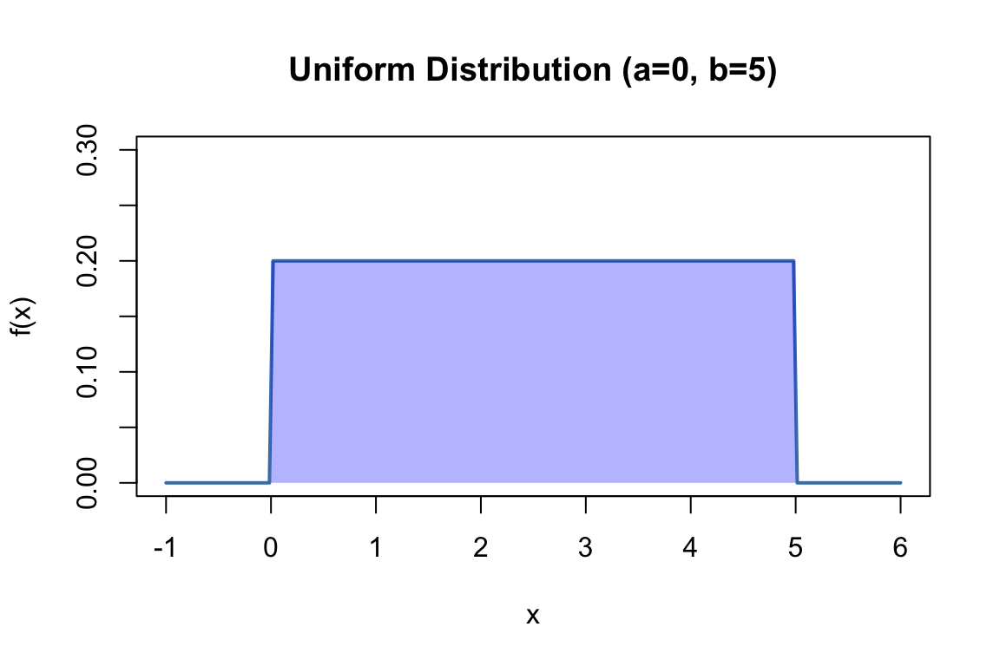
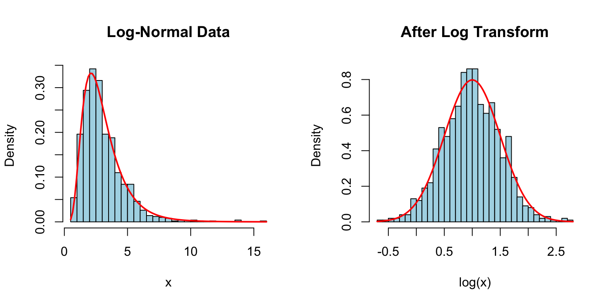
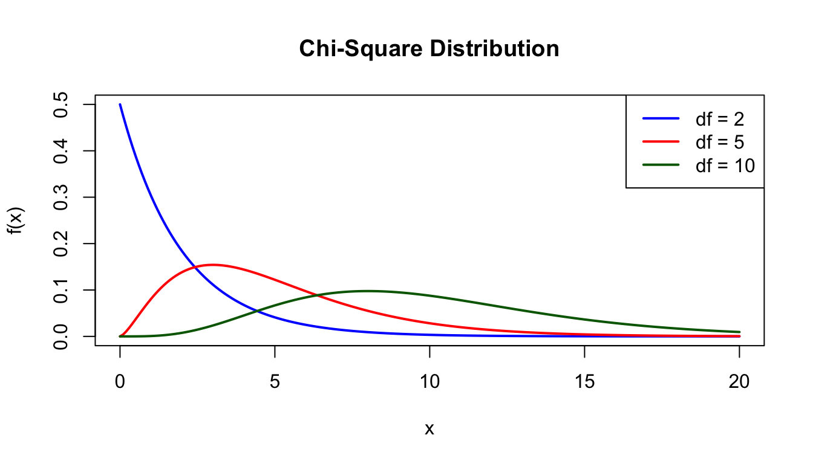

This appendix provides a reference for probability distributions commonly encountered in biological and bioengineering applications. Each distribution is characterized by its probability function, parameters, mean, variance, and typical applications.
29.1 Discrete Distributions
Discrete distributions describe random variables that take on countable values (integers).
29.1.1 Bernoulli Distribution
The Bernoulli distribution describes a single trial with two possible outcomes (success/failure).
Probability mass function:\[P(X = k) = p^k(1-p)^{1-k}, \quad k \in \{0, 1\}\]
Parameters:\(p\) = probability of success (0 ≤ p ≤ 1)
Mean:\(E[X] = p\)
Variance:\(\text{Var}(X) = p(1-p)\)
Applications:
Single coin flip
Whether a patient responds to treatment
Whether an allele is inherited
Code
# Bernoulli with different p valuesp_vals <-c(0.2, 0.5, 0.8)data.frame(outcome =rep(c("Failure", "Success"), 3),p =rep(p_vals, each =2),prob =c(1-p_vals[1], p_vals[1], 1-p_vals[2], p_vals[2], 1-p_vals[3], p_vals[3])) %>%ggplot(aes(x = outcome, y = prob, fill =factor(p))) +geom_col(position ="dodge") +labs(title ="Bernoulli Distribution", y ="Probability", fill ="p")

29.1.2 Binomial Distribution
The binomial distribution describes the number of successes in \(n\) independent Bernoulli trials.
Probability mass function:\[P(X = k) = \binom{n}{k} p^k (1-p)^{n-k}\]
Parameters:
\(n\) = number of trials
\(p\) = probability of success on each trial
Mean:\(E[X] = np\)
Variance:\(\text{Var}(X) = np(1-p)\)
Applications:
Number of heads in \(n\) coin flips
Number of mutant alleles in offspring
Number of patients responding to treatment out of \(n\) treated
Code
# Binomial distributions with n=20par(mfrow =c(1, 3))for (p inc(0.2, 0.5, 0.8)) { x <-0:20barplot(dbinom(x, 20, p), names.arg = x,main =paste("Binomial(n=20, p=", p, ")"),xlab ="k", ylab ="P(X=k)", col ="steelblue")}
R functions:dbinom(), pbinom(), qbinom(), rbinom()
29.1.3 Geometric Distribution
The geometric distribution describes the number of trials needed to get the first success.
Probability mass function:\[P(X = k) = (1-p)^{k-1}p, \quad k = 1, 2, 3, \ldots\]
Parameters:\(p\) = probability of success
Mean:\(E[X] = \frac{1}{p}\)
Variance:\(\text{Var}(X) = \frac{1-p}{p^2}\)
Applications:
Number of trials until first success
Time until extinction of an endangered population
Number of reads until finding a specific sequence
Code
# Geometric distribution example# If extinction probability is 0.1 per year, expected time to extinction?p <-0.1x <-1:50plot(x, dgeom(x-1, p), type ="h", lwd =2, col ="steelblue",xlab ="Years until extinction", ylab ="Probability",main =paste("Geometric Distribution (p =", p, ")\nMean =", 1/p, "years"))
R functions:dgeom(), pgeom(), qgeom(), rgeom()
29.1.4 Negative Binomial Distribution
The negative binomial extends the geometric distribution to describe the number of trials needed to achieve \(r\) successes.
Probability mass function:\[P(X = k) = \binom{k-1}{r-1} p^r (1-p)^{k-r}, \quad k = r, r+1, r+2, \ldots\]
Parameters:
\(r\) = number of successes needed
\(p\) = probability of success
Mean:\(E[X] = \frac{r}{p}\)
Variance:\(\text{Var}(X) = \frac{r(1-p)}{p^2}\)
Applications:
Overdispersed count data (variance > mean)
RNA-seq count modeling
Number of trials until \(r\) successes
Code
# Negative binomial example# Predator must capture 10 prey before reproductionr <-10p <-0.1x <- r:100plot(x, dnbinom(x - r, size = r, prob = p), type ="h", lwd =2, col ="steelblue",xlab ="Days until reproduction", ylab ="Probability",main =paste("Negative Binomial (r=10, p=0.1)\nMean =", r/p, "days"))
R functions:dnbinom(), pnbinom(), qnbinom(), rnbinom()
29.1.5 Poisson Distribution
The Poisson distribution describes the number of events occurring in a fixed interval when events occur independently at a constant average rate.
Probability mass function:\[P(X = k) = \frac{e^{-\lambda}\lambda^k}{k!}, \quad k = 0, 1, 2, \ldots\]
Note: For a Poisson distribution, mean equals variance. When observed variance exceeds the mean, the data are called “overdispersed.”
Applications:
Number of mutations per gene
Number of cells in a microscope field
Number of organisms per sample area
Rare event counts in genomics
Code
# Poisson distributions with different lambda valuespar(mfrow =c(1, 3))for (lambda inc(1, 5, 15)) { x <-0:30barplot(dpois(x, lambda), names.arg = x,main =paste("Poisson(λ =", lambda, ")"),xlab ="k", ylab ="P(X=k)", col ="steelblue")}
R functions:dpois(), ppois(), qpois(), rpois()
29.2 Continuous Distributions
Continuous distributions describe random variables that can take any value in some range.
29.2.1 Uniform Distribution
The uniform distribution assigns equal probability to all values in a specified range.
Probability density function:\[f(x) = \frac{1}{b-a}, \quad a \leq x \leq b\]
Parameters:
\(a\) = minimum value
\(b\) = maximum value
Mean:\(E[X] = \frac{a+b}{2}\)
Variance:\(\text{Var}(X) = \frac{(b-a)^2}{12}\)
Applications:
Random number generation
Uninformative priors in Bayesian analysis
Equal probability among alternatives
Code
x <-seq(-1, 6, length.out =200)plot(x, dunif(x, min =0, max =5), type ="l", lwd =2, col ="steelblue",xlab ="x", ylab ="f(x)", main ="Uniform Distribution (a=0, b=5)",ylim =c(0, 0.3))polygon(c(0, 0, 5, 5), c(0, 0.2, 0.2, 0), col =rgb(0, 0, 1, 0.3), border =NA)

R functions:dunif(), punif(), qunif(), runif()
29.2.2 Exponential Distribution
The exponential distribution describes the time between events in a Poisson process.
Probability density function:\[f(x) = \lambda e^{-\lambda x}, \quad x \geq 0\]
Parameters:\(\lambda\) = rate parameter
Mean:\(E[X] = \frac{1}{\lambda}\)
Variance:\(\text{Var}(X) = \frac{1}{\lambda^2}\)
Applications:
Time until next event (radioactive decay, mutations)
Lifespan distributions (constant hazard rate)
Waiting times
Code
# Exponential with different rate parametersx <-seq(0, 5, length.out =200)plot(x, dexp(x, rate =0.5), type ="l", lwd =2, col ="blue",xlab ="x", ylab ="f(x)", main ="Exponential Distribution",ylim =c(0, 2))lines(x, dexp(x, rate =1), lwd =2, col ="red")lines(x, dexp(x, rate =2), lwd =2, col ="darkgreen")legend("topright", c("λ = 0.5", "λ = 1", "λ = 2"),col =c("blue", "red", "darkgreen"), lwd =2)
R functions:dexp(), pexp(), qexp(), rexp()
29.2.3 Gamma Distribution
The gamma distribution generalizes the exponential distribution to describe waiting time until the \(r\)th event.
Probability density function:\[f(x) = \frac{\lambda^r}{\Gamma(r)} x^{r-1} e^{-\lambda x}, \quad x \geq 0\]
Parameters:
\(r\) = shape parameter (number of events)
\(\lambda\) = rate parameter
Mean:\(E[X] = \frac{r}{\lambda}\)
Variance:\(\text{Var}(X) = \frac{r}{\lambda^2}\)
Applications:
Time for multiple events to occur
Duration of processes with multiple stages
Prior distributions in Bayesian analysis
Code
# Gamma distribution with different shape parametersx <-seq(0, 15, length.out =200)plot(x, dgamma(x, shape =1, rate =0.5), type ="l", lwd =2, col ="blue",xlab ="x", ylab ="f(x)", main ="Gamma Distribution (rate = 0.5)",ylim =c(0, 0.5))lines(x, dgamma(x, shape =2, rate =0.5), lwd =2, col ="red")lines(x, dgamma(x, shape =5, rate =0.5), lwd =2, col ="darkgreen")legend("topright", c("shape = 1", "shape = 2", "shape = 5"),col =c("blue", "red", "darkgreen"), lwd =2)
R functions:dgamma(), pgamma(), qgamma(), rgamma()
29.2.4 Normal (Gaussian) Distribution
The normal distribution is the most important continuous distribution in statistics. It arises naturally when many independent factors contribute additively to an outcome.
Probability density function:\[f(x) = \frac{1}{\sqrt{2\pi}\sigma} e^{-\frac{1}{2}\left(\frac{x-\mu}{\sigma}\right)^2}\]
Parameters:
\(\mu\) = mean (location)
\(\sigma\) = standard deviation (scale)
Mean:\(E[X] = \mu\)
Variance:\(\text{Var}(X) = \sigma^2\)
Notation:\(X \sim \mathcal{N}(\mu, \sigma^2)\)
Applications:
Heights, weights, and other biological measurements
Measurement errors
Sampling distributions (via Central Limit Theorem)
Basis for many statistical tests
Code
x <-seq(-4, 8, length.out =200)plot(x, dnorm(x, mean =2, sd =1), type ="l", lwd =2, col ="blue",xlab ="x", ylab ="f(x)", main ="Normal Distribution",ylim =c(0, 0.45))lines(x, dnorm(x, mean =2, sd =0.5), lwd =2, col ="red")lines(x, dnorm(x, mean =2, sd =2), lwd =2, col ="darkgreen")legend("topright", c("μ=2, σ=1", "μ=2, σ=0.5", "μ=2, σ=2"),col =c("blue", "red", "darkgreen"), lwd =2)
Key properties:
68% of values fall within 1 SD of the mean
95% of values fall within 2 SDs of the mean
99.7% of values fall within 3 SDs of the mean
R functions:dnorm(), pnorm(), qnorm(), rnorm()
29.2.5 Standard Normal Distribution
The standard normal distribution is a normal distribution with \(\mu = 0\) and \(\sigma = 1\).
Any normal variable \(X \sim \mathcal{N}(\mu, \sigma^2)\) can be converted to a standard normal \(Z\) using:
\[Z = \frac{X - \mu}{\sigma}\]
This z-score tells us how many standard deviations a value is from the mean.
If \(\ln(X)\) follows a normal distribution, then \(X\) follows a log-normal distribution. This arises when effects are multiplicative rather than additive.
Probability density function:\[f(x) = \frac{1}{x\sigma\sqrt{2\pi}} e^{-\frac{(\ln x - \mu)^2}{2\sigma^2}}, \quad x > 0\]
par(mfrow =c(1, 2))# Log-normal dataset.seed(42)x <-rlnorm(1000, meanlog =1, sdlog =0.5)hist(x, breaks =30, main ="Log-Normal Data", col ="lightblue",xlab ="x", probability =TRUE)curve(dlnorm(x, meanlog =1, sdlog =0.5), add =TRUE, col ="red", lwd =2)# After log transformationhist(log(x), breaks =30, main ="After Log Transform", col ="lightblue",xlab ="log(x)", probability =TRUE)curve(dnorm(x, mean =1, sd =0.5), add =TRUE, col ="red", lwd =2)

R functions:dlnorm(), plnorm(), qlnorm(), rlnorm()
29.2.7 Chi-Square Distribution
The chi-square distribution is the distribution of a sum of squared standard normal variables. It is fundamental to many statistical tests.
Parameters:\(k\) = degrees of freedom
Mean:\(E[X] = k\)
Variance:\(\text{Var}(X) = 2k\)
Applications:
Goodness-of-fit tests
Tests of independence
Variance estimation
Code
x <-seq(0, 20, length.out =200)plot(x, dchisq(x, df =2), type ="l", lwd =2, col ="blue",xlab ="x", ylab ="f(x)", main ="Chi-Square Distribution",ylim =c(0, 0.5))lines(x, dchisq(x, df =5), lwd =2, col ="red")lines(x, dchisq(x, df =10), lwd =2, col ="darkgreen")legend("topright", c("df = 2", "df = 5", "df = 10"),col =c("blue", "red", "darkgreen"), lwd =2)

R functions:dchisq(), pchisq(), qchisq(), rchisq()
29.2.8 Student’s t Distribution
The t-distribution arises when estimating the mean of a normally distributed population when the sample size is small and the population standard deviation is unknown.
Parameters:\(\nu\) = degrees of freedom
As \(\nu \to \infty\), the t-distribution approaches the standard normal.
Applications:
t-tests
Confidence intervals for means
Robust regression
Code
x <-seq(-4, 4, length.out =200)plot(x, dnorm(x), type ="l", lwd =2, col ="black", lty =2,xlab ="x", ylab ="f(x)", main ="t-Distribution vs Normal")lines(x, dt(x, df =2), lwd =2, col ="blue")lines(x, dt(x, df =5), lwd =2, col ="red")lines(x, dt(x, df =30), lwd =2, col ="darkgreen")legend("topright", c("Normal", "t (df=2)", "t (df=5)", "t (df=30)"),col =c("black", "blue", "red", "darkgreen"), lwd =2, lty =c(2, 1, 1, 1))
R functions:dt(), pt(), qt(), rt()
29.2.9 F Distribution
The F-distribution is the ratio of two chi-square distributions divided by their degrees of freedom. It is used in ANOVA and comparing variances.
Parameters:
\(d_1\) = numerator degrees of freedom
\(d_2\) = denominator degrees of freedom
Applications:
ANOVA F-tests
Comparing variances
Regression significance tests
Code
x <-seq(0, 5, length.out =200)plot(x, df(x, df1 =5, df2 =20), type ="l", lwd =2, col ="blue",xlab ="x", ylab ="f(x)", main ="F Distribution",ylim =c(0, 1))lines(x, df(x, df1 =10, df2 =20), lwd =2, col ="red")lines(x, df(x, df1 =20, df2 =20), lwd =2, col ="darkgreen")legend("topright", c("F(5,20)", "F(10,20)", "F(20,20)"),col =c("blue", "red", "darkgreen"), lwd =2)
R functions:df(), pf(), qf(), rf()
29.2.10 Beta Distribution
The beta distribution is defined on the interval [0, 1] and is useful for modeling proportions and probabilities.
# Common Probability Distributions {#sec-probability-distributions}```{r}#| echo: false#| message: falselibrary(tidyverse)theme_set(theme_minimal())```This appendix provides a reference for probability distributions commonly encountered in biological and bioengineering applications. Each distribution is characterized by its probability function, parameters, mean, variance, and typical applications.## Discrete DistributionsDiscrete distributions describe random variables that take on countable values (integers).### Bernoulli DistributionThe Bernoulli distribution describes a single trial with two possible outcomes (success/failure).**Probability mass function:**$$P(X = k) = p^k(1-p)^{1-k}, \quad k \in \{0, 1\}$$**Parameters:** $p$ = probability of success (0 ≤ p ≤ 1)**Mean:** $E[X] = p$**Variance:** $\text{Var}(X) = p(1-p)$**Applications:**- Single coin flip- Whether a patient responds to treatment- Whether an allele is inherited```{r}#| fig-width: 5#| fig-height: 3# Bernoulli with different p valuesp_vals <-c(0.2, 0.5, 0.8)data.frame(outcome =rep(c("Failure", "Success"), 3),p =rep(p_vals, each =2),prob =c(1-p_vals[1], p_vals[1], 1-p_vals[2], p_vals[2], 1-p_vals[3], p_vals[3])) %>%ggplot(aes(x = outcome, y = prob, fill =factor(p))) +geom_col(position ="dodge") +labs(title ="Bernoulli Distribution", y ="Probability", fill ="p")```### Binomial DistributionThe binomial distribution describes the number of successes in $n$ independent Bernoulli trials.**Probability mass function:**$$P(X = k) = \binom{n}{k} p^k (1-p)^{n-k}$$**Parameters:**- $n$ = number of trials- $p$ = probability of success on each trial**Mean:** $E[X] = np$**Variance:** $\text{Var}(X) = np(1-p)$**Applications:**- Number of heads in $n$ coin flips- Number of mutant alleles in offspring- Number of patients responding to treatment out of $n$ treated```{r}#| fig-width: 8#| fig-height: 4# Binomial distributions with n=20par(mfrow =c(1, 3))for (p inc(0.2, 0.5, 0.8)) { x <-0:20barplot(dbinom(x, 20, p), names.arg = x,main =paste("Binomial(n=20, p=", p, ")"),xlab ="k", ylab ="P(X=k)", col ="steelblue")}```**R functions:** `dbinom()`, `pbinom()`, `qbinom()`, `rbinom()`### Geometric DistributionThe geometric distribution describes the number of trials needed to get the first success.**Probability mass function:**$$P(X = k) = (1-p)^{k-1}p, \quad k = 1, 2, 3, \ldots$$**Parameters:** $p$ = probability of success**Mean:** $E[X] = \frac{1}{p}$**Variance:** $\text{Var}(X) = \frac{1-p}{p^2}$**Applications:**- Number of trials until first success- Time until extinction of an endangered population- Number of reads until finding a specific sequence```{r}#| fig-width: 7#| fig-height: 4# Geometric distribution example# If extinction probability is 0.1 per year, expected time to extinction?p <-0.1x <-1:50plot(x, dgeom(x-1, p), type ="h", lwd =2, col ="steelblue",xlab ="Years until extinction", ylab ="Probability",main =paste("Geometric Distribution (p =", p, ")\nMean =", 1/p, "years"))```**R functions:** `dgeom()`, `pgeom()`, `qgeom()`, `rgeom()`### Negative Binomial DistributionThe negative binomial extends the geometric distribution to describe the number of trials needed to achieve $r$ successes.**Probability mass function:**$$P(X = k) = \binom{k-1}{r-1} p^r (1-p)^{k-r}, \quad k = r, r+1, r+2, \ldots$$**Parameters:**- $r$ = number of successes needed- $p$ = probability of success**Mean:** $E[X] = \frac{r}{p}$**Variance:** $\text{Var}(X) = \frac{r(1-p)}{p^2}$**Applications:**- Overdispersed count data (variance > mean)- RNA-seq count modeling- Number of trials until $r$ successes```{r}#| fig-width: 7#| fig-height: 4# Negative binomial example# Predator must capture 10 prey before reproductionr <-10p <-0.1x <- r:100plot(x, dnbinom(x - r, size = r, prob = p), type ="h", lwd =2, col ="steelblue",xlab ="Days until reproduction", ylab ="Probability",main =paste("Negative Binomial (r=10, p=0.1)\nMean =", r/p, "days"))```**R functions:** `dnbinom()`, `pnbinom()`, `qnbinom()`, `rnbinom()`### Poisson DistributionThe Poisson distribution describes the number of events occurring in a fixed interval when events occur independently at a constant average rate.**Probability mass function:**$$P(X = k) = \frac{e^{-\lambda}\lambda^k}{k!}, \quad k = 0, 1, 2, \ldots$$**Parameters:** $\lambda$ = rate parameter (expected count)**Mean:** $E[X] = \lambda$**Variance:** $\text{Var}(X) = \lambda$Note: For a Poisson distribution, mean equals variance. When observed variance exceeds the mean, the data are called "overdispersed."**Applications:**- Number of mutations per gene- Number of cells in a microscope field- Number of organisms per sample area- Rare event counts in genomics```{r}#| fig-width: 8#| fig-height: 4# Poisson distributions with different lambda valuespar(mfrow =c(1, 3))for (lambda inc(1, 5, 15)) { x <-0:30barplot(dpois(x, lambda), names.arg = x,main =paste("Poisson(λ =", lambda, ")"),xlab ="k", ylab ="P(X=k)", col ="steelblue")}```**R functions:** `dpois()`, `ppois()`, `qpois()`, `rpois()`## Continuous DistributionsContinuous distributions describe random variables that can take any value in some range.### Uniform DistributionThe uniform distribution assigns equal probability to all values in a specified range.**Probability density function:**$$f(x) = \frac{1}{b-a}, \quad a \leq x \leq b$$**Parameters:**- $a$ = minimum value- $b$ = maximum value**Mean:** $E[X] = \frac{a+b}{2}$**Variance:** $\text{Var}(X) = \frac{(b-a)^2}{12}$**Applications:**- Random number generation- Uninformative priors in Bayesian analysis- Equal probability among alternatives```{r}#| fig-width: 6#| fig-height: 4x <-seq(-1, 6, length.out =200)plot(x, dunif(x, min =0, max =5), type ="l", lwd =2, col ="steelblue",xlab ="x", ylab ="f(x)", main ="Uniform Distribution (a=0, b=5)",ylim =c(0, 0.3))polygon(c(0, 0, 5, 5), c(0, 0.2, 0.2, 0), col =rgb(0, 0, 1, 0.3), border =NA)```**R functions:** `dunif()`, `punif()`, `qunif()`, `runif()`### Exponential DistributionThe exponential distribution describes the time between events in a Poisson process.**Probability density function:**$$f(x) = \lambda e^{-\lambda x}, \quad x \geq 0$$**Parameters:** $\lambda$ = rate parameter**Mean:** $E[X] = \frac{1}{\lambda}$**Variance:** $\text{Var}(X) = \frac{1}{\lambda^2}$**Applications:**- Time until next event (radioactive decay, mutations)- Lifespan distributions (constant hazard rate)- Waiting times```{r}#| fig-width: 7#| fig-height: 4# Exponential with different rate parametersx <-seq(0, 5, length.out =200)plot(x, dexp(x, rate =0.5), type ="l", lwd =2, col ="blue",xlab ="x", ylab ="f(x)", main ="Exponential Distribution",ylim =c(0, 2))lines(x, dexp(x, rate =1), lwd =2, col ="red")lines(x, dexp(x, rate =2), lwd =2, col ="darkgreen")legend("topright", c("λ = 0.5", "λ = 1", "λ = 2"),col =c("blue", "red", "darkgreen"), lwd =2)```**R functions:** `dexp()`, `pexp()`, `qexp()`, `rexp()`### Gamma DistributionThe gamma distribution generalizes the exponential distribution to describe waiting time until the $r$th event.**Probability density function:**$$f(x) = \frac{\lambda^r}{\Gamma(r)} x^{r-1} e^{-\lambda x}, \quad x \geq 0$$**Parameters:**- $r$ = shape parameter (number of events)- $\lambda$ = rate parameter**Mean:** $E[X] = \frac{r}{\lambda}$**Variance:** $\text{Var}(X) = \frac{r}{\lambda^2}$**Applications:**- Time for multiple events to occur- Duration of processes with multiple stages- Prior distributions in Bayesian analysis```{r}#| fig-width: 7#| fig-height: 4# Gamma distribution with different shape parametersx <-seq(0, 15, length.out =200)plot(x, dgamma(x, shape =1, rate =0.5), type ="l", lwd =2, col ="blue",xlab ="x", ylab ="f(x)", main ="Gamma Distribution (rate = 0.5)",ylim =c(0, 0.5))lines(x, dgamma(x, shape =2, rate =0.5), lwd =2, col ="red")lines(x, dgamma(x, shape =5, rate =0.5), lwd =2, col ="darkgreen")legend("topright", c("shape = 1", "shape = 2", "shape = 5"),col =c("blue", "red", "darkgreen"), lwd =2)```**R functions:** `dgamma()`, `pgamma()`, `qgamma()`, `rgamma()`### Normal (Gaussian) DistributionThe normal distribution is the most important continuous distribution in statistics. It arises naturally when many independent factors contribute additively to an outcome.**Probability density function:**$$f(x) = \frac{1}{\sqrt{2\pi}\sigma} e^{-\frac{1}{2}\left(\frac{x-\mu}{\sigma}\right)^2}$$**Parameters:**- $\mu$ = mean (location)- $\sigma$ = standard deviation (scale)**Mean:** $E[X] = \mu$**Variance:** $\text{Var}(X) = \sigma^2$**Notation:** $X \sim \mathcal{N}(\mu, \sigma^2)$**Applications:**- Heights, weights, and other biological measurements- Measurement errors- Sampling distributions (via Central Limit Theorem)- Basis for many statistical tests```{r}#| fig-width: 7#| fig-height: 5x <-seq(-4, 8, length.out =200)plot(x, dnorm(x, mean =2, sd =1), type ="l", lwd =2, col ="blue",xlab ="x", ylab ="f(x)", main ="Normal Distribution",ylim =c(0, 0.45))lines(x, dnorm(x, mean =2, sd =0.5), lwd =2, col ="red")lines(x, dnorm(x, mean =2, sd =2), lwd =2, col ="darkgreen")legend("topright", c("μ=2, σ=1", "μ=2, σ=0.5", "μ=2, σ=2"),col =c("blue", "red", "darkgreen"), lwd =2)```**Key properties:**- 68% of values fall within 1 SD of the mean- 95% of values fall within 2 SDs of the mean- 99.7% of values fall within 3 SDs of the mean**R functions:** `dnorm()`, `pnorm()`, `qnorm()`, `rnorm()`### Standard Normal DistributionThe standard normal distribution is a normal distribution with $\mu = 0$ and $\sigma = 1$.Any normal variable $X \sim \mathcal{N}(\mu, \sigma^2)$ can be converted to a standard normal $Z$ using:$$Z = \frac{X - \mu}{\sigma}$$This **z-score** tells us how many standard deviations a value is from the mean.```{r}#| fig-width: 7#| fig-height: 5x <-seq(-4, 4, length.out =200)y <-dnorm(x)plot(x, y, type ="l", lwd =2,xlab ="z", ylab ="f(z)",main ="Standard Normal Distribution")# Shade areasx_1sd <-seq(-1, 1, length.out =100)polygon(c(-1, x_1sd, 1), c(0, dnorm(x_1sd), 0),col =rgb(0, 0, 1, 0.3), border =NA)x_2sd <-c(seq(-2, -1, length.out =50), seq(1, 2, length.out =50))for (region inlist(c(-2, -1), c(1, 2))) { xx <-seq(region[1], region[2], length.out =50)polygon(c(region[1], xx, region[2]), c(0, dnorm(xx), 0),col =rgb(0, 1, 0, 0.3), border =NA)}legend("topright", c("68% within 1σ", "95% within 2σ"),fill =c(rgb(0, 0, 1, 0.3), rgb(0, 1, 0, 0.3)))```### Log-Normal DistributionIf $\ln(X)$ follows a normal distribution, then $X$ follows a log-normal distribution. This arises when effects are multiplicative rather than additive.**Probability density function:**$$f(x) = \frac{1}{x\sigma\sqrt{2\pi}} e^{-\frac{(\ln x - \mu)^2}{2\sigma^2}}, \quad x > 0$$**Parameters:**- $\mu$ = mean of the log-transformed variable- $\sigma$ = SD of the log-transformed variable**Mean:** $E[X] = e^{\mu + \sigma^2/2}$**Variance:** $\text{Var}(X) = (e^{\sigma^2} - 1)e^{2\mu + \sigma^2}$**Applications:**- Gene expression levels- Organism sizes- Concentrations- Income distributions```{r}#| fig-width: 8#| fig-height: 4par(mfrow =c(1, 2))# Log-normal dataset.seed(42)x <-rlnorm(1000, meanlog =1, sdlog =0.5)hist(x, breaks =30, main ="Log-Normal Data", col ="lightblue",xlab ="x", probability =TRUE)curve(dlnorm(x, meanlog =1, sdlog =0.5), add =TRUE, col ="red", lwd =2)# After log transformationhist(log(x), breaks =30, main ="After Log Transform", col ="lightblue",xlab ="log(x)", probability =TRUE)curve(dnorm(x, mean =1, sd =0.5), add =TRUE, col ="red", lwd =2)```**R functions:** `dlnorm()`, `plnorm()`, `qlnorm()`, `rlnorm()`### Chi-Square DistributionThe chi-square distribution is the distribution of a sum of squared standard normal variables. It is fundamental to many statistical tests.**Parameters:** $k$ = degrees of freedom**Mean:** $E[X] = k$**Variance:** $\text{Var}(X) = 2k$**Applications:**- Goodness-of-fit tests- Tests of independence- Variance estimation```{r}#| fig-width: 7#| fig-height: 4x <-seq(0, 20, length.out =200)plot(x, dchisq(x, df =2), type ="l", lwd =2, col ="blue",xlab ="x", ylab ="f(x)", main ="Chi-Square Distribution",ylim =c(0, 0.5))lines(x, dchisq(x, df =5), lwd =2, col ="red")lines(x, dchisq(x, df =10), lwd =2, col ="darkgreen")legend("topright", c("df = 2", "df = 5", "df = 10"),col =c("blue", "red", "darkgreen"), lwd =2)```**R functions:** `dchisq()`, `pchisq()`, `qchisq()`, `rchisq()`### Student's t DistributionThe t-distribution arises when estimating the mean of a normally distributed population when the sample size is small and the population standard deviation is unknown.**Parameters:** $\nu$ = degrees of freedomAs $\nu \to \infty$, the t-distribution approaches the standard normal.**Applications:**- t-tests- Confidence intervals for means- Robust regression```{r}#| fig-width: 7#| fig-height: 4x <-seq(-4, 4, length.out =200)plot(x, dnorm(x), type ="l", lwd =2, col ="black", lty =2,xlab ="x", ylab ="f(x)", main ="t-Distribution vs Normal")lines(x, dt(x, df =2), lwd =2, col ="blue")lines(x, dt(x, df =5), lwd =2, col ="red")lines(x, dt(x, df =30), lwd =2, col ="darkgreen")legend("topright", c("Normal", "t (df=2)", "t (df=5)", "t (df=30)"),col =c("black", "blue", "red", "darkgreen"), lwd =2, lty =c(2, 1, 1, 1))```**R functions:** `dt()`, `pt()`, `qt()`, `rt()`### F DistributionThe F-distribution is the ratio of two chi-square distributions divided by their degrees of freedom. It is used in ANOVA and comparing variances.**Parameters:**- $d_1$ = numerator degrees of freedom- $d_2$ = denominator degrees of freedom**Applications:**- ANOVA F-tests- Comparing variances- Regression significance tests```{r}#| fig-width: 7#| fig-height: 4x <-seq(0, 5, length.out =200)plot(x, df(x, df1 =5, df2 =20), type ="l", lwd =2, col ="blue",xlab ="x", ylab ="f(x)", main ="F Distribution",ylim =c(0, 1))lines(x, df(x, df1 =10, df2 =20), lwd =2, col ="red")lines(x, df(x, df1 =20, df2 =20), lwd =2, col ="darkgreen")legend("topright", c("F(5,20)", "F(10,20)", "F(20,20)"),col =c("blue", "red", "darkgreen"), lwd =2)```**R functions:** `df()`, `pf()`, `qf()`, `rf()`### Beta DistributionThe beta distribution is defined on the interval [0, 1] and is useful for modeling proportions and probabilities.**Parameters:**- $\alpha$ = shape parameter 1- $\beta$ = shape parameter 2**Mean:** $E[X] = \frac{\alpha}{\alpha + \beta}$**Variance:** $\text{Var}(X) = \frac{\alpha\beta}{(\alpha+\beta)^2(\alpha+\beta+1)}$**Applications:**- Prior distributions for probabilities (Bayesian analysis)- Modeling proportions- Allele frequencies```{r}#| fig-width: 7#| fig-height: 4x <-seq(0, 1, length.out =200)plot(x, dbeta(x, 2, 5), type ="l", lwd =2, col ="blue",xlab ="x", ylab ="f(x)", main ="Beta Distribution",ylim =c(0, 3))lines(x, dbeta(x, 5, 2), lwd =2, col ="red")lines(x, dbeta(x, 2, 2), lwd =2, col ="darkgreen")lines(x, dbeta(x, 0.5, 0.5), lwd =2, col ="purple")legend("top", c("Beta(2,5)", "Beta(5,2)", "Beta(2,2)", "Beta(0.5,0.5)"),col =c("blue", "red", "darkgreen", "purple"), lwd =2)```**R functions:** `dbeta()`, `pbeta()`, `qbeta()`, `rbeta()`## Summary Table| Distribution | Type | Parameters | Mean | Variance | R prefix ||:------------|:-----|:-----------|:-----|:---------|:---------|| Bernoulli | Discrete | p | p | p(1-p) | binom (n=1) || Binomial | Discrete | n, p | np | np(1-p) | binom || Geometric | Discrete | p | 1/p | (1-p)/p² | geom || Neg. Binomial | Discrete | r, p | r/p | r(1-p)/p² | nbinom || Poisson | Discrete | λ | λ | λ | pois || Uniform | Continuous | a, b | (a+b)/2 | (b-a)²/12 | unif || Exponential | Continuous | λ | 1/λ | 1/λ² | exp || Gamma | Continuous | r, λ | r/λ | r/λ² | gamma || Normal | Continuous | μ, σ | μ | σ² | norm || Log-normal | Continuous | μ, σ | exp(μ+σ²/2) | (exp(σ²)-1)exp(2μ+σ²) | lnorm || Chi-square | Continuous | k | k | 2k | chisq || t | Continuous | ν | 0 (ν>1) | ν/(ν-2) (ν>2) | t || F | Continuous | d₁, d₂ | d₂/(d₂-2) | ... | f || Beta | Continuous | α, β | α/(α+β) | ... | beta |## R Function Naming ConventionR uses a consistent naming convention for distribution functions:- **d**xxx - density/mass function (PDF/PMF)- **p**xxx - cumulative distribution function (CDF)- **q**xxx - quantile function (inverse CDF)- **r**xxx - random number generationFor example, for the normal distribution:```{r}# Density at x = 0 for standard normaldnorm(0)# Probability that X ≤ 1.96pnorm(1.96)# Value where P(X ≤ q) = 0.975qnorm(0.975)# Generate 5 random normal valuesset.seed(42)rnorm(5)```## Choosing the Right Distribution```{r}#| echo: false#| fig-width: 9#| fig-height: 6# Decision flowchart concept visualizationpar(mar =c(1, 1, 2, 1))plot(1, type ="n", xlim =c(0, 10), ylim =c(0, 7), axes =FALSE,xlab ="", ylab ="", main ="Choosing a Distribution")# Boxesrect(3.5, 6, 6.5, 6.8)text(5, 6.4, "Data Type?", font =2)rect(1, 4.5, 3.5, 5.3)text(2.25, 4.9, "Discrete\n(Counts)")rect(6.5, 4.5, 9, 5.3)text(7.75, 4.9, "Continuous")# Discrete branchrect(0, 2.5, 2, 3.3)text(1, 2.9, "Binary?")rect(2.5, 2.5, 4.5, 3.3)text(3.5, 2.9, "Count events?")# Continuous branchrect(6, 2.5, 8, 3.3)text(7, 2.9, "Bounded?")rect(8.5, 2.5, 10.5, 3.3)text(9.5, 2.9, "Positive?")# Resultstext(0.5, 1.5, "Bernoulli/\nBinomial", cex =0.8, col ="blue")text(3.5, 1.5, "Poisson", cex =0.8, col ="blue")text(6.5, 1.5, "Beta/\nUniform", cex =0.8, col ="blue")text(9.5, 1.5, "Gamma/\nLog-normal", cex =0.8, col ="blue")# Arrowsarrows(5, 6, 2.25, 5.3, length =0.1)arrows(5, 6, 7.75, 5.3, length =0.1)```**Guidelines for selection:**1. **Is your variable discrete or continuous?** - Discrete: Binomial, Poisson, Negative Binomial - Continuous: Normal, Gamma, Beta, etc.2. **For counts:** - Fixed number of trials with yes/no: **Binomial** - Events per unit time/space, rare: **Poisson** - Overdispersed counts (variance > mean): **Negative Binomial**3. **For continuous measurements:** - Symmetric, unbounded: **Normal** - Positive, right-skewed: **Log-normal** or **Gamma** - Bounded between 0 and 1: **Beta** - Waiting times: **Exponential** or **Gamma**4. **For testing:** - Means (unknown variance): **t-distribution** - Variances: **Chi-square** or **F-distribution**